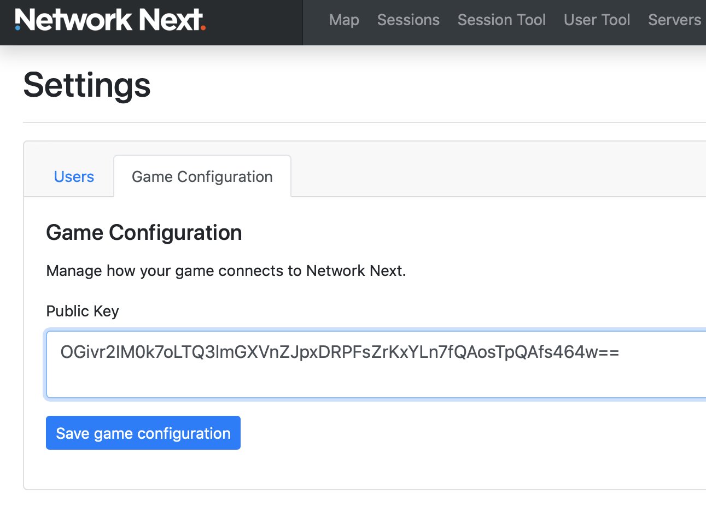

Getting Started¶
To use Network Next, you need a customer private and public key.
You can generate this keypair with the keygen tool in the “keygen” directory of the SDK.
keygen.exe – windows
keygen_mac – mac
keygen_linux – linux
When you run the keygen, you should see something like this:
Welcome to Network Next!
This is your public key:
OGivr2IM0k7oLTQ3lmGXVnZJpxDRPFsZrKxYLn7fQAosTpQAfs464w==
This is your private key:
OGivr2IM0k4lCfbM/VZCVK99KkDSCbzi8fzM2WnZCQb7R6k4UHc51+gtNDeWYZdWdkmnENE8WxmsrFguft9ACixOlAB+zjrj
IMPORTANT: Save your private key in a secure place and don't share it with anybody, not even us!
Next, go into the Network Next portal and copy your public key into the game settings page to associate the keypair with your account:
Now set the public key on the client.
For example, in upgraded_client.cpp example, replace the test customer public key with your own:
const char * customer_public_key = "leN7D7+9vr24uT4f1Ba8PEEvIQA/UkGZLlT+sdeLRHKsVqaZq723Zw==";
Set the customer private key on the server.
You can change the code in the upgraded_server.cpp example:
const char * customer_private_key = "OGivr2IM0k4lCfbM/VZCVK99KkDSCbzi8fzM2WnZCQb7R6k4UHc51+gtNDeWYZdWdkmnENE8WxmsrFguft9ACixOlAB+zjrj";
Or pass it in with an environment variable:
export NEXT_CUSTOMER_PRIVATE_KEY=OGivr2IM0k4lCfbM/VZCVK99KkDSCbzi8fzM2WnZCQb7R6k4UHc51+gtNDeWYZdWdkmnENE8WxmsrFguft9ACixOlAB+zjrj
Now that you have the customer private and public key setup, you should now be able to run the upgraded client and server example and see your session in the portal.
Congratulations, Network Next is ready to use :)
Welcome to Network Next, we look forward to working with you!
Glenn Fiedler, CEO, Network Next.